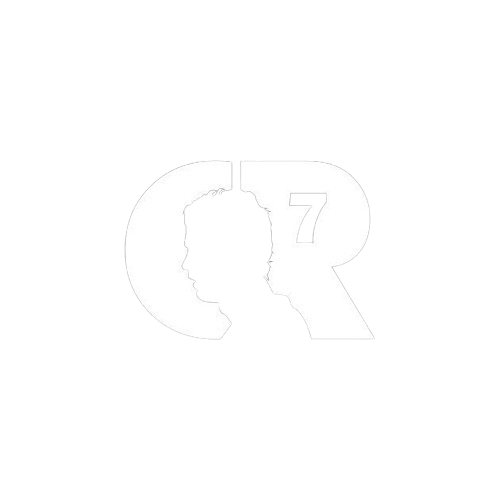

O sucesso de Cristiano Ronaldo não é apenas medido em gols e títulos, mas sim na dedicação incansável, na determinação inabalável e na paixão inesgotável que ele traz para o campo a cada jogo. Sua história é a prova viva de que com trabalho árduo, talento e comprometimento, é possível transformar sonhos em realidade, inspirando milhões ao redor do mundo a alcançarem suas próprias metas, dentro e fora dos gramados.
Cristiano Ronaldo, uma lenda do futebol, coleciona conquistas individuais que o destacam como um dos melhores jogadores da história. Com múltiplos prêmios Bola de Ouro e títulos de artilharia em diversos campeonatos, sua habilidade excepcional e determinação inabalável o consagram como um ícone do esporte.
5X Bolas de Ouro
Sua principal conquista individual, as suas 5 bolas de ouros devido as brilhantres temporadas!
4X Chuteiras de Ouro
Uma de suas principais premiações individuais, devido ao seu faro em marcar grandes gols!
2X FIFA the Best
O primeiro ganhador do prêmio FIFA the Best!